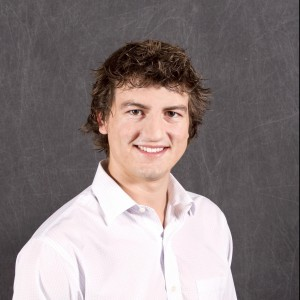

pwndevils History
The pwndevils team was started in 2009 by Mike Mabey and Dr. Gail-Joon Ahn, however it ended up dormant until revived in 2015 by Mike Mabey and Dr. Adam Doupé. Dr. Doupé has continued to act as the Advisor of the club. Dr. Yan Shoshitaishvili has been added as an advisor of the club since Fall of 2017. In 2018 Dr. Fish Wang was added to the advisors to complete the epic hacking trifecta. Playing ctfs, pwndevils did well from 2017-2020 culminating in the official change to playing as Shellphish, continuing the legacy of the oldest hacking team in the United States. We now act as a hacking club at ASU and play all CTFs as Shellphish. You can find our club constitution here. You can find our ctf manifesto here.
Faculty Advisors
The pwndevils would not exist without the support of the following faculty members (who try to hack right alongside the team)
| Adam Doupé | Yan Shoshitaishvili | Fish Wang |
|---|---|---|
|  |  |
Leadership
pwndevil officers make things go: they organize meetings, get food for meetings (yay), and are generally awesome people.
- Root: Zion Basque
- V33P: Nathan Smith
- Banker: Erin Ozcan